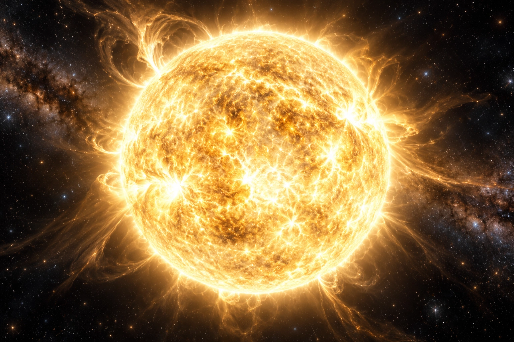

| Campo | Dato |
|---|---|
| Natura | Creazione stellare |
| Epoca | −11948 CP |
| Registro | WORK-01 |
Che cos’è
The Vigil Star è una stella reale, non una luce illusoria, un’immagine di Halo o un faro alimentato ininterrottamente dal suo creatore. Edran la realizzò dopo avere completato The Sovereign. L’opera rispondeva a un problema concreto: insediamenti extramondiali dipendevano da energia controllata dai vecchi dominatori. Creare una sorgente indipendente cambiava la possibilità materiale di abitarli senza continuare a chiedere quella concessione.
Costruzione e collaborazione
Helyr Ossen contribuì alla progettazione degli accessi e alla separazione delle orbite abitate. Edran non acquisì Astrolabe attraverso questa collaborazione: Helyr era una potenza autonoma, non un’abilità supplementare del Sovereign. Massa, emissioni, gravità e collocazione dovevano essere compatibili con le regioni abitate. La soluzione non fu inserire un secondo sole nel cielo di Rovenne.
Come funziona
La materia della stella è Independent: la sua esistenza non consuma continuamente la Reserve di Edran. Occorre distinguere la sorgente stellare dalle infrastrutture che raccolgono, distribuiscono e amministrano la sua energia. Una stella indipendente non rende eternamente efficienti collettori o abitazioni, né attribuisce a chi la creò un diritto permanente sulle comunità che ne fanno uso.
Vigil Star e Vigil Reach
Vigil Star indica la sorgente; Vigil Reach è il nome contemporaneo del sistema extramondiale. Non è il sistema planetario di Avarenne e non sostituisce Aster, il suo sole locale. Gli insediamenti si sono trasformati nel tempo: alcuni sono stati abbandonati e altri ricostruiti. Non è fissato qui un numero aggiuntivo di pianeti, una classe spettrale, una massa o un raggio stellare: ricavarli dalla nuova illustrazione introdurrebbe falsi dati.
Stato presente e conflitti
A T0 la stella esiste e brilla. I custodi dei collettori e le comunità hanno rivendicazioni diverse sugli accessi. Non tutti conservano il nome del creatore. Helyr può raggiungere parti del sistema, ma non possiede per questo ogni insediamento o abitante. L’opera ha dunque una storia oltre Edran e non resta congelata al momento della sua realizzazione.
Prove e limiti della conoscenza
EVD-03 comprende matrici orbitali, registrazioni della stabilizzazione, copie di navigazione e misure. Una luce remota dimostra un fenomeno luminoso, non da sola il nome di chi l’ha creato. Emissioni, rapporti gravitazionali e matrici indipendenti consentono verifiche. Possedere una carta non apre un Gate. Edran ricorda la realizzazione e la frase «Che l’alba non debba più essere concessa»; non conosce automaticamente gli sviluppi avvenuti durante la sua assenza.
Vigil Reach: il sistema e gli insediamenti
Fonti e verificabilità
- GIOCATORE_78_Prima_vita_e_ricordi_consolidati.md · Fonte originale
- RISERVATO_96_Campagne_opere_ed_eredita_del_Creator.md · Fonte originale
- RISERVATO_84_Caduta_continuita_ritorno_e_Seats.md · Fonte originale
- RISERVATO_101_Repertorio_delle_prove_e_trasmissioni.md · Fonte originale
- RISERVATO_116_Territori_antichi_e_sovrapposizioni.md · Fonte originale